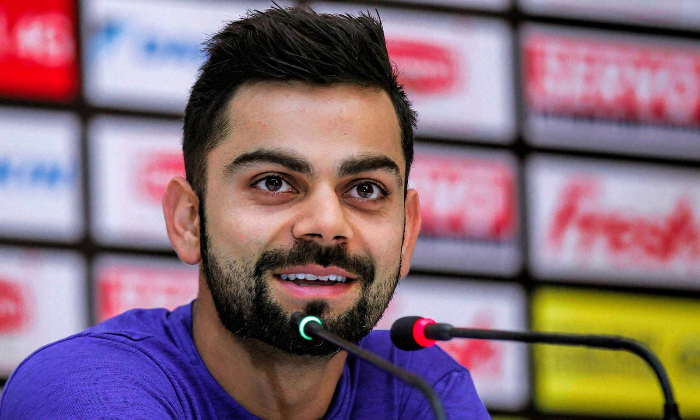

Virat Kohli is an Indian international cricketer, counted amongst the top sportsmen in India. This biography of Virat Kohli provides detailed information about his childhood, life, cricket records, achievements, works & timeline.
Birthday: November 5, 1988
Nationality: Indian
Famous: Cricketers Indian Men
Also Known As: Cheeku
Sun Sign: Scorpio
Age: 29 Years
Born In: Delhi
Famous As: Cricketer
Height: 1.75 M
Spouse/Ex-: Anushka Sharma
Father: Prem Kohli
Mother: Saroj Kohli
Siblings: Bhavna Kholi, Vikash Kholi
Net Worth: $63 Million As Of Dec 7, 2016
More Facts
Hobbies: Cricket, Listening Music, Enjoying With Family
Awards: 2012 - ICC One Day International Player Of The Year Award
2012 - People's Choice Awards India For Favorite Sportsperson
2013 - Arjuna Award For Cricket
Hobbies: Cricket, Listening Music, Enjoying With Family
Awards: 2012 - ICC One Day International Player Of The Year Award
2012 - People's Choice Awards India For Favorite Sportsperson
2013 - Arjuna Award For Cricket
Virat Kohli is an Indian international cricketer, counted amongst the top sportsmen in India. Considered to be among the best batsmen in the present era, he also doubles up as an occasional right-arm medium pace bowler. He is known for his dependable and powerful batting style and has single-handedly won several matches for India. Virat became fascinated with cricket quite early on in his life and took to the bat when he was just three. His parents recognized his potential and had him enrolled at the West Delhi Cricket Academy when he was nine years old. He developed into a very talented player over the ensuing years and represented his city Delhi at various age-group levels and domestic cricket. His first major success came in 2008 when he captained India Under-19s to victory at the 2008 Under-19 World Cup. Soon he was selected to play for the Indian team and established himself as a valuable middle order player. After having gained a reputation as an “ODI specialist”, he has proved his mettle in test cricket as well. Currently, he is the captain of the Indian team in Test cricket and vice-captain in limited overs formats. Virat Kohli is married to famous Indian actress Anushka Sharma.
Virat Kohli was born on 5 November 1988, in Delhi, India, to Prem Kohli and Saroj Kohli. His father was a criminal lawyer while his mother is a housewife. He has two siblings: an elder brother, Vikash, and an elder sister, Bhavna.
He became interested in cricket when he was a little boy. Aged just three, he would pick up a cricket bat and ask his father to bowl to him. He received his early schooling from Vishal Bharti Public School.
His interest in cricket continued to grow and his father had him enrolled at the West Delhi Cricket Academy when Virat was nine. He trained at the academy under Rajkumar Sharma and also played matches at the Sumit Dogra Academy.
In 2002, he played for Delhi Under-15 team and became the leading run-getter in the 2002–03 Polly Umrigar Trophy tournament. He was made the captain of the team for the 2003–04 Polly Umrigar Trophy.
He was selected in the Delhi Under-17 team for the 2003–04 Vijay Merchant Trophy. He scored 470 runs in four matches at an average of 117.50 with two hundreds. He repeated his fabulous performance the next season too, and helped Delhi lift the 2004–05 Vijay Merchant Trophy.
His consistent performances earned him a place in the India Under-19 squad on its tour of England in 2006. He averaged 105 in the three-match ODI series which the India Under-19 squad won. He also performed remarkably against Pakistan’s U-19 cricket team later that year.
His father died in 2006 when Kohli was just 18. His father had been his biggest support and his untimely death plunged the family into a financial crisis. With more responsibilities on his young shoulders now, Kohli began taking the game even more seriously.
In 2008, he led the Indian team to victory at the 2008 ICC Under-19 Cricket World Cup held in Malaysia. Following this, he was bought by the Indian Premier League franchise, Royal Challengers Bangalore, for $30,000 on a youth contract.
He was selected for the Indian ODI squad for tour of Sri Lanka in 2008. During the tour, he batted as a makeshift opener throughout the series as both the regular openers Sachin Tendulkar and Virender Sehwag were injured. India eventually won the series 3–2 which was India's first ODI series win against Sri Lanka in Sri Lanka.
He continued performing consistently throughout 2009. He received his first man of the match award after scoring an unbeaten 79 against the West Indies in a group match during the 2009 ICC Champions Trophy. Later the same year he played in the home ODI series against Sri Lanka, scoring his first ODI century—107 off 111 balls—in the fourth match of the series.
He continued with his good form which earned him a place in the 2011 World Cup squad. Kohli played in every match in the tournament and scored an unbeaten 100 in the first match against Bangladesh, becoming the first Indian batsman to score a century on World Cup debut. India reached the finals, and Kohli scored important 35 runs in the finals against Sri Lanka. India went on to win the match by six wickets and lift the World Cup for the first time since 1983.
During the India tour of West Indies in June–July 2011, India sent a largely inexperienced squad and Kohli was one of three uncapped players in the Test squad. He made his Test debut at Kingston in the first match of the Test series. India won the Test series 1–0 but Kohli was found wanting against the fast bowling. He scored just 76 runs from five innings in the series and was subsequently dropped from the Test squad.
He was recalled to Test squad ndia's four-match series in England in July and August 2011, as as replacement for the injured Yuvraj Singh. He did not play in any Test match in the series and was moderately successful in the ODI series.
He made his mark in the Test cricket during the India's tour of Australia in December 2011. India lost the Test series 4–0 but Virat Kohli was India's top run-scorer in the series. He scored his maiden Test century in the first innings of fourth and final match at Adelaide; he scored 116 runs in the innings.
Kohli was appointed the vice-captain for the 2012 Asia Cup in Bangladesh. In the final group stage match against Pakistan he scored 183 whilst chasing—the highest individual score against Pakistan in ODIs—and broke West Indies’ Brian Lara’s long standing record of 156. Despite his great performances India could not progress to the final of the tournament.
His string of successful stints continued throughout 2013. He played well in the seven-match ODI series against Australia, striking the fastest century by an Indian in ODIs in the second match at Jaipur by blasting a 100 off just 52 balls. His innings of 100 not out helped India chase down the target of 360.
Even though better known for his blazing performances in ODIs, +Kohli is also a skilled test player. In 2014, he was named the captain of the Indian test squad. In the Australian tour the same year, he amassed a total of 692 runs in four Tests—the most by any Indian batsman in a Test series in Australia.
His career saw a temporary slump in 2015 when he was unable to make any big scores. However, he soon regained his form and became the fastest batsman in the world to make 1,000 runs in T20I cricket during the South Africa's tour of India later the same year.
Kohli was in terrific form in 2016. His superlative batting performances helped India reach the semifinals of 2016 T20 World Cup, held in India.
Virat Kohli started a charity foundation called 'Virat Kohli Foundation' (VKF), in 2013, for helping underprivileged children. The foundation also conducts events to raise funds for charitable causes.
He won the ICC ODI Player of the Year in 2012 and the BCCI's international cricketer of the year for the 2011–12 and 2014–15 seasons.
He received the Arjuna Award in 2013 in recognition of his achievements in international cricket.
Virat Kohli was in a high profile relationship with Bollywood actress Anushka Sharma. The pair reportedly broke up in early 2016, but they later patched up and got back together.
Virat and Anushka Sharma got married on December 11, 2017. The two tied the knot at Borgo Finocchieto in Tuscany, Italy.
The Virat and Anushka (Virushka) marriage was a very private affair and no one knew of the marriage until a few days before the marriage. According to media reports, everyone involved in the wedding including the photographers, caterers and hotel staff was bound by a Non Disclosure Agreements (NDA).
Virat Kohli is known his tremendous mental strength and one incident amply testifies it. When Virat Kohli lost his father he was in the midst of a Ranji Trophy match, playing for Delhi. He got a call at 3 am and came to know that his father has died. He was the overnight batsman for Delhi and his team was in a difficult situation. He scored a match saving 90 runs for his team the next day and went to his dad's funeral after that innings.
Football is said to be Virat's second favourite sport. In 2014, he bought the FC Goa franchise of the Indian Super League (ISL) stating that as a football lover he wanted to see the sport grow in India. He also stated that it was a future investment for him.
In 2014, Kohli became the brand ambassador and a stakeholder in the London-based social networking venture 'Sport Convo'.
In November 2014, Kohli in association with Anjana Reddy's Universal Sportsbiz (USPL) launched a fashion label WROGN. The brand sells men's casual wear, and it has tied up with online major Myntra.com and Shopper's Stop.
In September 2015, Virat Kohli became the co-owner of the UAE Royals franchise of the International Premier Tennis League (IPTL). The IPTL is an annual team tennis event that is played across various cities in Asia.
In 2015, he invested a total of INR 90 crore (around US$14 million) in a chain of gyms and fitness centres - Chisel. Kohli co-owns the fitness chain jointly with Chisel India and CSE (Cornerstone Sport and Entertainment).
In December 2015, he became a co-owner of the Bengaluru Yodhas franchise of the Indian Pro Wrestling League. The other co-owner of the franchise is the JSW group.
In 2016, in association with Stepathlon Lifestyle, Virat launched Stepathlon Kids, which is a fitness venture for children.